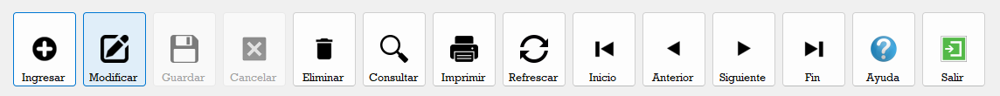
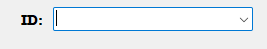
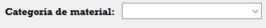
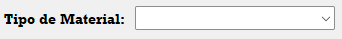

Ayuda - Categoria Material

A continuación se describen los botones disponibles en la barra de navegación del módulo:

Ingresar: Permite agregar un nuevo registro al catálogo.
Modificar: Permite editar el dato del registro que se encuentre
seleccionado en ese momento.
Guardar: Se habilita únicamente al presionar el botón
Ingresar o al activar el modo de edición mediante el botón
Modificar.
Cancelar: Permite salir del modo de ingreso sin guardar ningún
cambio.
Eliminar: Permite eliminar el registro seleccionado del
catálogo.
Consultar: Ejecuta consultas inteligentes dentro del módulo.
Imprimir: Genera un reporte
Refrescar: Actualiza la vista del Data Grid View. Es útil cuando
se ha ingresado o modificado un registro y los cambios no se reflejan de
inmediato.
Inicio / Anterior / Siguiente / Fin: Son controles de navegación
del Data Grid View para desplazarse entre los registros.
Ayuda: Abre la guía de ayuda en la que usted se encuentra en este
momento.
Salir: Cierra el módulo de Categoria de material y regresa a la ventana
anterior del sistema.
En esta seccion se visualizan las distintas categorias de materiales:

Se coloca el numero de registro que corresponda a la categoría de material, el numero se autoincrementa al momento de insertar por lo que seguirá el orden de forma automática

Se coloca el nombre de la categoria de material que se desea crear

En este campo se elige el tipo de material al que pertenezca la categoria de material, por ejemplo:
Categoría: Maderas Tipo de material: Materia Prima
*este dato viene de la tabla de tipo de material
